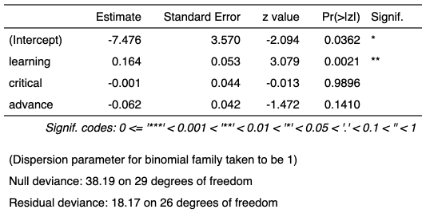

| as_flextable.glm {flextable} | R Documentation |
produce a flextable describing a
generalized linear model produced by function glm.
## S3 method for class 'glm' as_flextable(x, ...)
x |
glm model |
... |
unused argument |

Other as_flextable methods:
as_flextable.gam(),
as_flextable.grouped_data(),
as_flextable.htest(),
as_flextable.lm(),
as_flextable.xtable(),
as_flextable()
if(require("broom")){
dat <- attitude
dat$high.rating <- (dat$rating > 70)
probit.model <- glm(high.rating ~ learning + critical +
advance, data=dat, family = binomial(link = "probit"))
ft <- as_flextable(probit.model)
ft
}